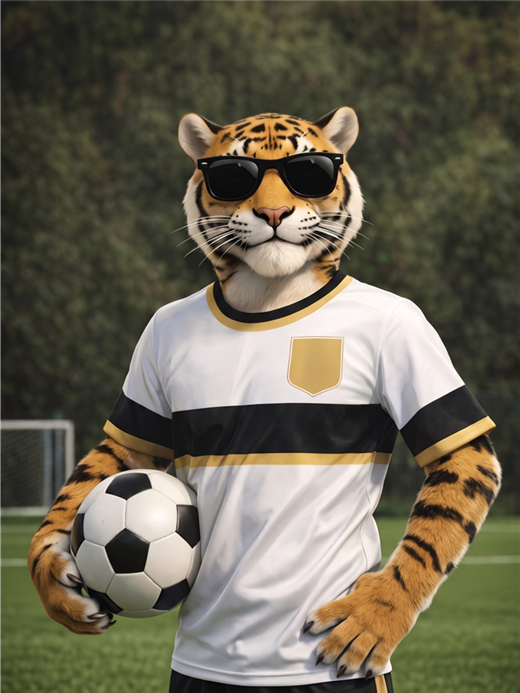
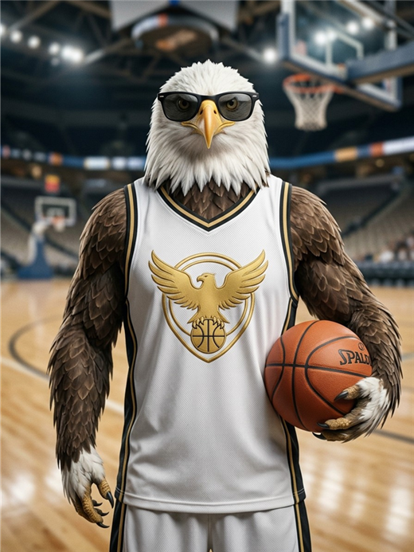
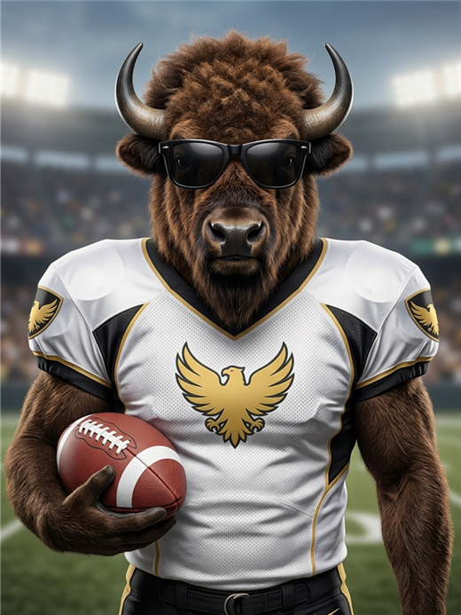

Análisis deportivo con método, datos y resultados a la vista.Sports analysis built on data, method and full transparency.
Investigamos fútbol, NBA y NFL cada día y publicamos cada recomendación con su cuota, su nivel de confianza y su resultado, ganado o perdido.We research football, NBA and NFL every day and publish each recommendation with its odds, confidence level and outcome, win or lose.
Un equipo organizado en mesas de análisisA team organised into research desks
La Tribuna del Pick es una marca de análisis deportivo para la comunidad hispanohablante. Cada mesa tiene su especialidad y un personaje como rostro: los animales representan a las mesas, no a personas.La Tribuna del Pick is a sports analysis brand for the Spanish-speaking community. Each desk has its own specialty and a character as its face: the animals represent the desks, not individuals.

Mesa de FútbolFootball Desk
Ligas y torneos de fútbol.Leagues and football tournaments.

Mesa NBANBA Desk
Baloncesto de la NBA.NBA basketball.

Mesa NFLNFL Desk
Fútbol americano.American football.
Mesa de CombinadasParlay Desk
Combinaciones de picks.Combined picks (parlays).
Un proceso simple, repetible y documentadoA simple, repeatable, documented process
No revelamos el detalle de nuestros modelos, pero sí mostramos su desempeño.We do not disclose the details of our models, but we do show how they perform.
Cómo reportamos los resultadosHow we report results
Publicamos un balance semanal y un informe mensual en el canal, siempre con el mismo formato y mostrando lo que se da y lo que no.We publish a weekly balance and a monthly report in our channel, always in the same format and showing both wins and losses.
| IndicadorMetric | Qué mideWhat it measures | FrecuenciaFrequency |
|---|---|---|
| AciertosHit rate | Picks ganados sobre picks cerrados, por mesa y total.Winning picks over settled picks, by desk and overall. | Semanal y mensualWeekly and monthly |
| Balance netoNet result | Resultado final en pesos, incluyendo las pérdidas, con 1 unidad = $100.000 COP.Final result in pesos, including losses, with 1 unit = COP 100,000. | Semanal y mensualWeekly and monthly |
| Mejor rachaBest streak | Mayor número de aciertos seguidos en el periodo.Longest run of consecutive wins in the period. | MensualMonthly |
| Resultado por pickPer-pick outcome | Cada pick se cierra en el canal con su resultado.Each pick is closed in the channel with its outcome. | Al terminar el partidoAt full time |
Rendimientos pasados no garantizan resultados futuros. Los informes se publican en t.me/LaTribunaDelPick.Past performance does not guarantee future results. Reports are published at t.me/LaTribunaDelPick.
Elige tu nivel de accesoChoose your access level
Empieza gratis. Si te gusta, el VIP te da todo el día de análisis.Start for free. If you like it, VIP gives you the full day of analysis.
Canal gratisFree channel
- 3 picks al día3 picks per day
- Aviso diario de la jornadaDaily match-day briefing
- Balance semanal y mensualWeekly and monthly reports
VIP
- Todos los picks y combinadas del díaAll picks and parlays of the day
- Cuota, stake y resultado de cada unoOdds, stake and outcome of each
- Publicación anticipadaEarly publication
- Soporte en menos de 24 horasSupport within 24 hours
Referencia en dólares aproximada (1 US$ ≈ 3.300 COP). El cobro se hace en pesos colombianos con Bre-B y el valor exacto en tu moneda depende de la tasa del día. No se renueva solo.Dollar amounts are approximate (US$1 ≈ COP 3,300). Billing is in Colombian pesos via Bre-B and the exact amount in your currency depends on the day's exchange rate. Subscriptions do not renew automatically.
Lo que más nos preguntanWhat people ask most
¿Qué es La Tribuna del Pick?What is La Tribuna del Pick?
Una firma de análisis deportivo con picks diarios de fútbol, NBA y NFL, organizada en mesas de análisis.A sports analysis brand with daily football, NBA and NFL picks, organised into research desks.
¿Qué es un pick y qué es una combinada?What is a pick and what is a parlay?
Un pick es una recomendación puntual con su cuota y stake. Una combinada une varios picks en un solo boleto: si se cumplen todos, la cuota se multiplica; si falla uno, se pierde.A pick is a single recommendation with its odds and stake. A parlay combines several picks into one ticket: if all hit, the odds multiply; if one fails, the ticket loses.
¿Qué es el stake?What is the stake?
La cantidad de unidades que sugerimos, de 1 a 5. En nuestros resultados, 1 unidad equivale a $100.000 COP (≈ US$30). Ajusta la unidad a tu propio presupuesto.The number of units we suggest, from 1 to 5. In our reports, 1 unit equals COP 100,000 (≈ US$30). Adjust the unit to your own budget.
¿Puedo ganar siguiendo a la Tribu?Can I win by following the Tribe?
Nuestro objetivo es ayudarte a decidir mejor: análisis con método, stake ordenado y todos los resultados a la vista. Ningún pronóstico es seguro, pero con constancia, disciplina y la información correcta la Tribu va paso a paso. ¡Vamos juntos!Our goal is to help you decide better: methodical analysis, orderly staking and every result in plain sight. No forecast is certain, but with consistency, discipline and the right information the Tribe moves step by step. Let's go together!
¿Cómo me suscribo al VIP?How do I subscribe to VIP?
Escríbele al bot @LaTribunadelPick_Bot y sigue las instrucciones.Message the bot @LaTribunadelPick_Bot and follow the instructions.
¿Dónde apuesto?Where do I place bets?
En operadores con licencia vigente en tu país. Revisa que la casa de apuestas esté autorizada por el regulador de tu país. No nos asociamos con sitios no autorizados.With operators licensed in your country. Check that the bookmaker is authorised by your national regulator. We do not partner with unlicensed sites.
Disfruta el deporte con cabezaEnjoy the game, the smart way
Queremos que vivas el análisis deportivo como lo que es: una forma de entender mejor el juego y divertirte con la Tribu. Por eso este espacio es para mayores de 18 años y cada uno pone su parte.We want you to enjoy sports analysis for what it is: a way to understand the game better and have fun with the Tribe. That is why this space is for adults aged 18 and over, and each of us does our part.
Compartimos información y opinión deportiva con método, mostramos todos los resultados y te decimos con claridad qué somos: no somos casa de apuestas, no manejamos dinero de terceros y no damos asesoría financiera.
We share sports information and opinion with method, show every result and tell you plainly what we are: not a bookmaker, we do not handle third-party money and we do not give financial advice.
Juega con un presupuesto que puedas permitirte, define un límite de dinero y de tiempo, respétalo y mantén la calma después de una mala jornada: ¡siempre hay otra!
Play with a budget you are comfortable with, set limits on money and time, stick to them and stay calm after a rough day: there is always another matchday!
Ningún pronóstico es seguro y los resultados pasados no garantizan los futuros. Nuestro trabajo es ayudarte a decidir con mejor información.
No forecast is certain and past results do not guarantee future ones. Our job is to help you decide with better information.
Si el juego deja de ser diversión, habla con alguien de confianza o con un profesional de salud mental. Pedir ayuda es de valientes.
If gambling stops being fun, talk to someone you trust or a mental health professional. Asking for help takes courage.